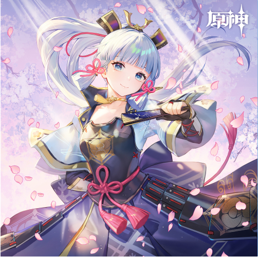

神里绫华
游戏《原神》及其衍生作品中的角色
游戏《原神》及其衍生作品中的角色
神里绫华，米哈游出品的游戏《原神》及其衍生作品中的角色，稻妻“社奉行”神里家的大小姐。容姿端丽，品行高洁。绫华贵为“公主”，平日主理家族内外事宜。绫华常出现在社交场合，与民间交集也较多。因此，更被人们熟悉的她反而获得了高于兄长的名望，被雅称为“白鹭公主”。众所周知，神里家的女儿绫华小姐容姿端丽、品行高洁，是深受民众钦慕的人物 [9]。
| 中文名 | 神里绫华 | 登场作品 | 原神 |
|---|---|---|---|
| 外文名 | Kamisato Ayaka | 生日 | 9月28日[1] |
| 别名 | 白鹭霜华、白鹭公主 | 所属 | 社奉行[6] |
| 配音 | 小N（汉语） [4] 、早见沙织（日语） [6] 、艾丽卡· | 身份 | 神里家的大小姐 |
| 门德斯（英语） [7] 、李侑俐（韩语） [8] | 神之眼 | 冰 | |
| 性别 | 女 | 命之座 | 雪鹤座[2] |
身份背景
放眼稻妻领土，未上至雷电将军视听的事务大多由“评定所”处理。 “评定所”的议事权分属三家，人称三奉行，即“社奉行”、“天领奉行”与 “勘定奉 行”。拥有此三项奉行权利的家族，其姓氏为：神里、九条与柊，乃是稻妻 无人不知无人不晓的御三家。而神里绫华，正是社奉行神里家的大小姐，远近闻名 的“白鹭公主”。
问及她为何被称为白鹭公主，稻妻人众说纷纭，却无人说得出“白鹭公主”之名的确切来由。 不过，绫华受民众爱戴的事，倒是可见一斑。[10]
相貌衣着
神里绫华灰蓝色的眸子上面是一层厚厚的齐刘海，雪白色的长发梳成高马尾，发绳上有类似武士兜的头饰。两髪垂穗子状的侧发用总角结束起，左眼角有一枚泪痣。身穿一件渐变蓝的羽织和深蓝色的褶裙，裙上印有落樱与流水的花纹。 绫华的胸腹部被一件黑色的胴甲包裹，相连的裙甲盖住裙的两侧，甲胄上印有神里家的 椿纹[40]。红绳在腰部前后各系了一个总角结，背后的总角结位于背后 的蓝紫色蝴蝶结中间，其上系着绫华的神之眼。
性格特点
绫华性情善良仁厚，待人礼貌得体，常亲自出面处理民间事务，与民众距离很近。她个性认真，追求将每一件事务都办得尽善尽美。人们为这份心意所感动，亲近于她，还赠予她“白鹭公主”的雅称。街坊邻里说起她，总会露出真心实意的赞叹之色。
受良好家教影响的绫华有着一颗纯如冰晶的至美之心。冬日里旋转冰晶，便能看到折射出的绚烂华彩。绫华的心灵亦是如此。她不只拥有华美拘谨的一面，心灵深处还埋藏着不为人知的温柔与可爱。
不过，想转动高悬于天穹的心，就得有攀上云端的能力。对那般能人异士，绫华可是非常愿意与之结交的——因为良友于她，有如霜尖点翠，剑上流光，将是极富命运感的一笔点缀。